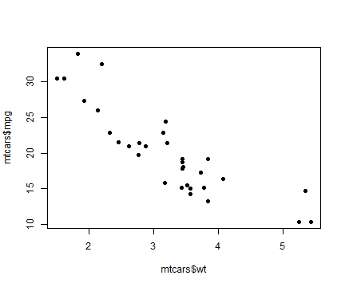
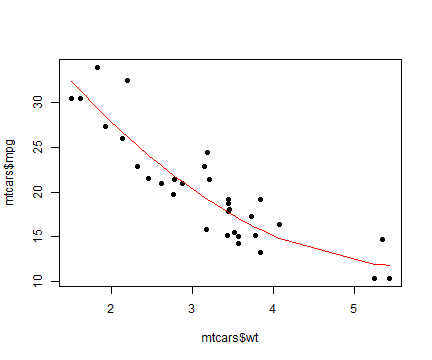

- the lm() command in R is used to fit linear regression models
Let us call the dependent variable Y and independent variable X
The equation of the regression line is Y = aX + b
Sometimes, the relation between Y and X will not be exactly linear
So we may have to fit a more complex model
In this Shiny example, we fit a quadratic model (degree 2).
Comparing the performance of the quadratic with the linear model is informative.
Linear and Quadratic Models
Rajaraman
Linear Models in R
Car Mileage Study
- We use the mtcars data set in R to illustrate the point.
- X is wt, the weight of the car. Y is mpg, the miles per gallon.
data(mtcars)
plot(mtcars$wt, mtcars$mpg, pch = 19)

Linear Model
- Let us first fit a linear model. The regression line is shown in red.
- The goodness of fit is indicated by the sum of squares of residual errors.
- The least squares error for our linear model is 287.3.
plot(mtcars$wt, mtcars$mpg, pch = 19)
abline(lm(mtcars$mpg ~ mtcars$wt), col = "red")

Quadratic Model
- With a degree-2 model fit, the lest squares error reduces to 203.7
plot(mtcars$wt, mtcars$mpg, pch = 19)
lm1 = lm(mtcars$mpg ~ mtcars$wt + I(mtcars$wt^2))
ord = order(mtcars$wt)
lines(mtcars$wt[ord], predict(lm1)[ord], col = "red")

The Tiny Shiny App
- The finished Shiny application: https://ramanraja.shinyapps.io/shiny2/
- Shiny enables the app to be interactive on the web.
- You can choose between a linear and quadratic models.
- Select the model on the left panel and push the button to see the effect.
Thank you !